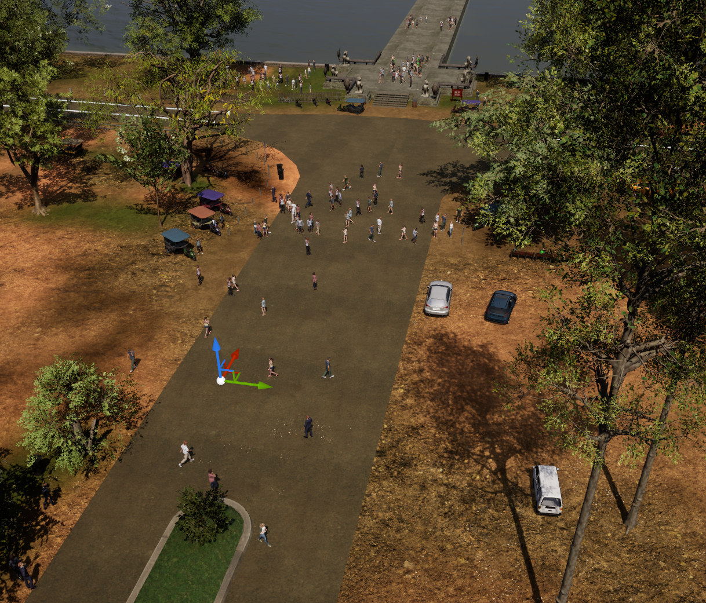
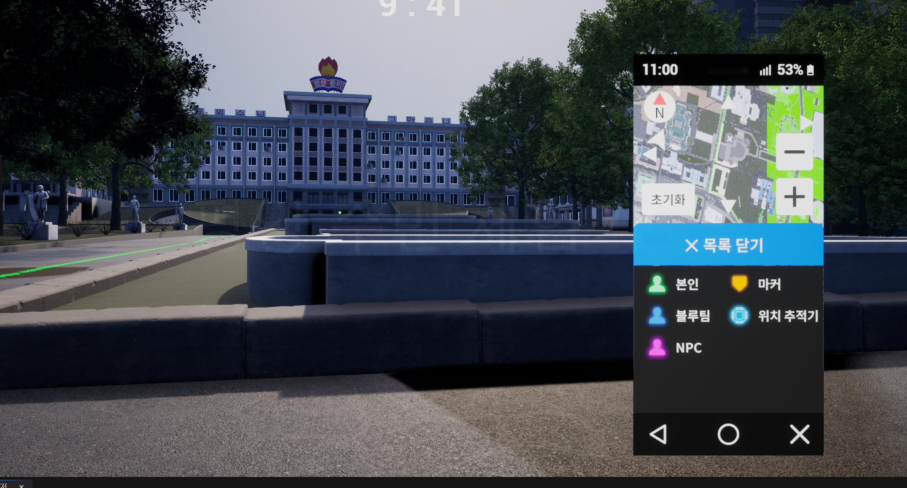
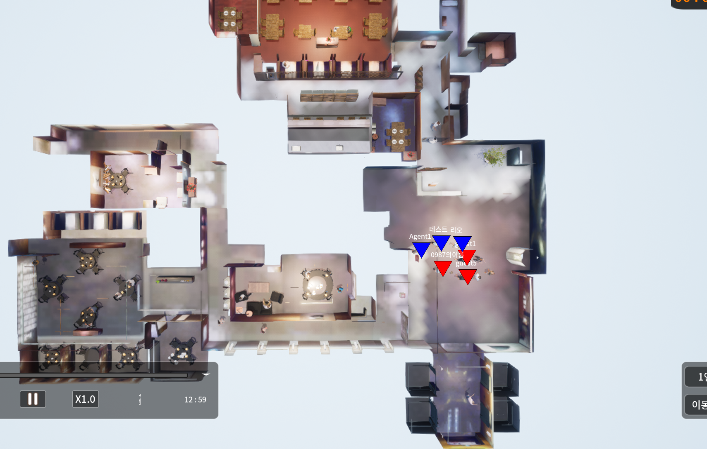
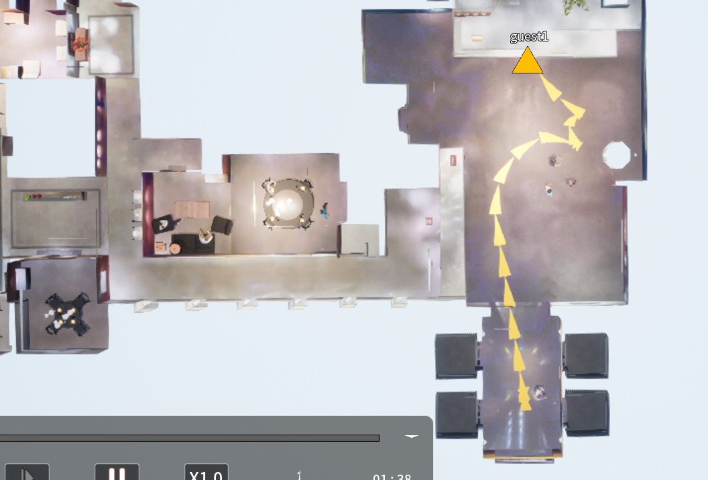
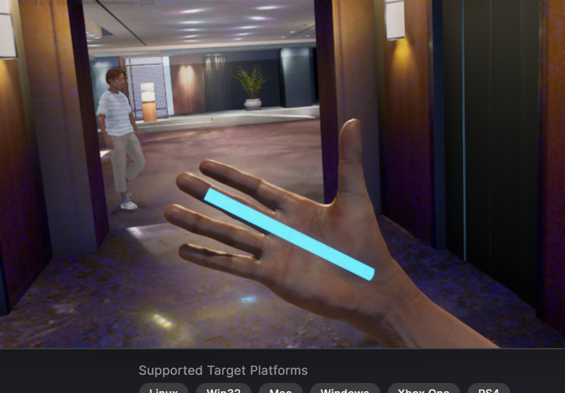
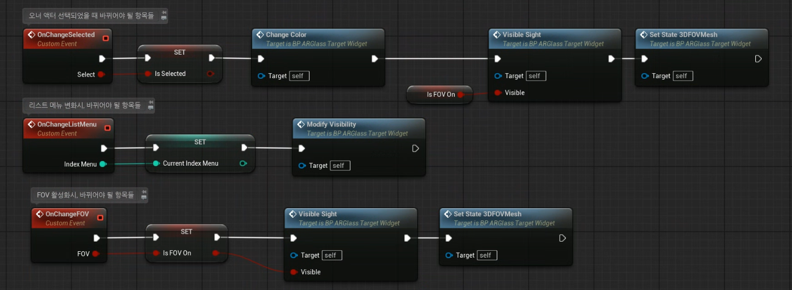

AAR 기능 개선
AAR 녹화 안정화, AAR 목록 UI 개선, 타임라인 조작 오류, 이동 경로 표시 개선
- 01AAR 녹화 안정화
녹화 끊김과 AAR 조작 오류의 원인을 추적하고 완화
- 02AAR 목록 UI 개선
파일 네이밍, 삭제, 최근 항목 유지, 잠금 기능 등 목록 관리 개선
- 03AAR 경로 표시
플레이어/NPC 이동 경로를 저장해 AAR 모드에서 표시
2024.07 - 2025.10 / Unreal VR Training Simulator
운영 중인 Unreal VR 훈련 콘텐츠의 기능 개선 사업. 고객 요구사항을 정해진 기간과 훈련 계획 안에서 안전하게 반영하는 것이 목적이었고, 각 항목마다 원인과 연관 범위를 파악한 뒤 기존 구조와 호환되도록 수정


작업 관점
프로젝트 중간에 유지보수와 기능개선 작업으로 투입되어, 요구사항과 연결된 기존 기능이 어떻게 동작하는지 먼저 파악한 뒤 수정 방향을 결정
기능 개선 범위
규모가 크거나 시스템 영향 범위가 있던 개선 항목을 기능 단위로 정리
AAR 녹화 안정화, AAR 목록 UI 개선, 타임라인 조작 오류, 이동 경로 표시 개선
녹화 끊김과 AAR 조작 오류의 원인을 추적하고 완화
파일 네이밍, 삭제, 최근 항목 유지, 잠금 기능 등 목록 관리 개선
플레이어/NPC 이동 경로를 저장해 AAR 모드에서 표시
훈련자 클라이언트에서 촬영한 동영상과 사진을 교관 컴퓨터에서 확인하는 기능 개선
교관 컴퓨터가 여러 훈련자의 사진/동영상 파일을 IOCP로 수신
팀, 닉네임, 촬영시간을 파일명에서 추출해 교관 UI에 표시
사진 저장/로드 과정에서 발생하는 프레임 드랍을 완화
외부 IK 플러그인 교체와 멀티플레이 상황의 캐릭터 동작 버그 수정
미완성 자체 Control Rig 기능을 외부 IK 플러그인으로 교체
서버와 클라이언트에서 실행되어야 할 IK 처리 흐름을 구분해 동작 보정
전반적 UI 교체와 엔진 마이그레이션 과정에서 기존 로직과 플러그인 호환 처리
새 UI 디자인을 기존 기능 흐름과 충돌하지 않도록 반영
Target.cs, 참조 오류, 플러그인 업데이트와 경고 처리
덤프와 BP 콜스택으로 마이그레이션 후 크래시 발생 위치 추적
담당 상세
각 요구사항을 기존 훈련 흐름 안에서 정리하고, 기능별 영향 범위와 수정 내용을 구분
AAR 녹화 안정화, AAR 모드 조작 오류, 목록 UI 개선, 이동 경로 표시 기능을 각각 구분해 처리
AAR 녹화가 간헐적으로 끊기고, AAR 모드에서 일시정지/재개, 재생/중지 반복, 타임라인 이동 후 원복, 재개 실패, AAR 멈춤 문제가 발생
Unreal의 AAR 녹화 구조가 Replication 데이터 저장 흐름과 연결되어 있었고, DemoNetDriver의 Reliable 패킷 버퍼 오버플로우 문제가 녹화 안정성에 영향
컨테이너 용량 조정, AAR 녹화 주기 조절, Replication 양 감소로 훈련 시간을 버틸 수 있는 수준까지 완화. UE 5.5 전환 이후 해당 문제가 재발하지 않음
파일 네이밍, 삭제, 최근 3개 유지, 잠금 기능을 개선해 AAR 목록 UI 흐름을 정리
플레이어/NPC 이동 경로를 별도 저장하고 AAR 모드에서 경로를 확인할 수 있도록 표시 기능 추가


여러 훈련자의 동시 촬영 파일을 교관 컴퓨터에서 안정적으로 받아야 했기 때문에, 멀티 스레드 기반 다중 수신 방식으로 파일 공유 시스템을 구성. 사진 저장/로드는 프레임 드랍을 줄이기 위해 비동기 처리
교관 컴퓨터가 IOCP 수신자로 동영상/사진 파일을 받고, 각 훈련자 클라이언트가 파일을 전송. 수신 후 팀, 닉네임, 촬영시간을 파일명에서 추출해 교관 UI 목록에 표시
훈련자 클라이언트에서 촬영한 동영상 파일을 교관 컴퓨터로 전송하고, 교관 UI에서 목록 확인과 재생 기능 제공. AAR 흐름과 호환되도록 파일 관리 방식 정리
교관 컴퓨터에는 파일 공유 시스템으로 사진을 전송. 같은 팀 클라이언트끼리는 촬영 위치와 방향을 Replication으로 공유하고 각 PC에서 캡처하는 방식으로 공유 모의
파일 비동기 처리로 휴대폰 앨범 UI 표시에는 약간의 딜레이가 존재. 대신 여러 명이 촬영해도 끊김이 덜하도록 성능 안정성을 우선

기존 자체 Control Rig 기능이 미완성 상태였고, Mimic Pro 플러그인으로 교체. 멀티플레이에서 서버가 보는 클라이언트 캐릭터 움직임이 밀리거나 이상 동작하는 문제를 BP 로직 분석으로 추적
서버가 처리해야 할 로직과 클라이언트 캐릭터에서 실행되어야 할 IK 처리 흐름을 구분해, 멀티플레이 상황에 맞게 동작하도록 정리
VR 캐릭터 IK 교체 이후 훈련 동작과 호환되도록 의자 앉기 기능 등 추가 요구사항 반영
프로그램 전반의 UI 디자인 교체와 기존 기능 로직 호환, UE 5.2에서 UE 5.5로의 마이그레이션 과정에서 발생한 오류와 크래시 추적을 함께 처리

새 UI 디자인을 반영하면서 기존 기능 흐름을 먼저 확인하고, 기존 로직을 살려 확장할 수 있는 부분과 수정이 필요한 연결부를 구분해 작업
위젯 선택, 메뉴 변경, FOV 표시처럼 UI 상태 변화가 여러 기능으로 이어지는 부분은 이벤트 디스패처/델리게이트로 전달하고, 색상·가시성·FOV Mesh 갱신은 담당 함수에서 처리하도록 정리
마이그레이션 기능 실행 후 Target.cs, 참조 오류, Warning 메시지, 플러그인 업데이트/교체, 커스텀 수정분 이관 처리
덤프와 BP 콜스택으로 마이그레이션 후 크래시 발생 위치 추적. Blueprint 쪽은 Development 패키징과 `-ScriptStackOnWarnings` 옵션으로 BP 스크립트 콜스택 확인
고객 요구사항을 기간 안에 처리해야 하는 사업이라, 기존 훈련 흐름과 영향 범위를 먼저 확인한 뒤 안정적으로 반영하는 판단이 중요